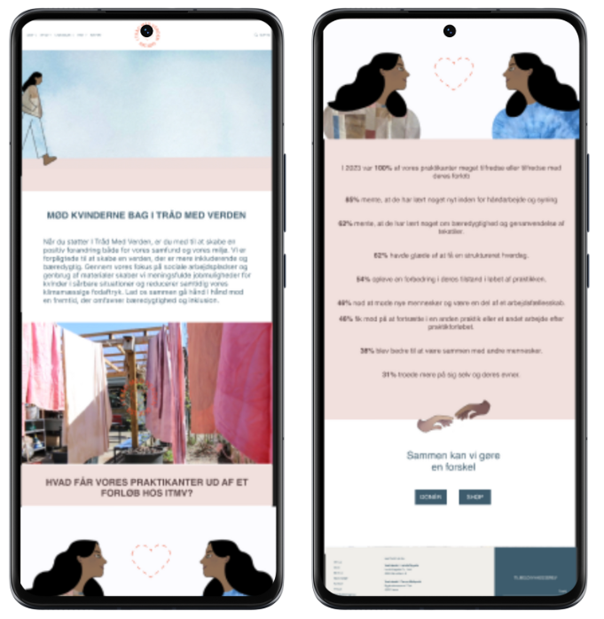

On my second semester, we were tasked to create a new digitalized solution for Karrusel Festival in Copenhagen. The primary objective of this project was to create an innovative and user-friendly digital platform that would enhance the overall experience for attendees of Karrusel Festival. The platform aimed to streamline various aspects of the festival experience, including ticket purchasing, event scheduling, artist information, and real-time updates.
On our second semester, we were tasked to create a web feature for “I Tråd Med Verden,” a socio-economic business dedicated to providing employment opportunities for vulnerable individuals through textile design. Our primary goal was to develop a digital solution that would attract more customers to their website by showcasing the compelling stories of the women involved in the initiative.
To capture the hearts and eyes of potential customers, we decided to tell the story of "I Tråd Med Verden" through animation. I created all the illustrations and animations for this project using Adobe Illustrator and Adobe After Effects. Additionally, I developed the prototype in Figma and was responsible for launching the site through GitHub and Netlify. This comprehensive approach ensured that the website feature was both visually engaging and technically sound, effectively conveying the impactful stories of the women involved.
By focusing on the personal stories of the women working at "I Tråd Med Verden," we were able to create a meaningful web feature that resonated with users and enhanced the business's online presence. This project not only developed my skills in UX/UI design and 2D animation but also deepened my understanding of the impact that a thoughtful, user-centered design can have on a socio-economic initiative.